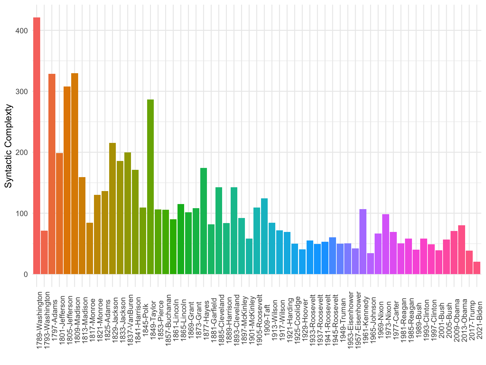

Your final assignment is a presentation of a research project of your own choosing. The only requirement is that the project involves some sort of text analysis akin to the methods we covered in the course (sentiment analysis, scaling, topic models, etc.). Please record your presentation (voice is fine) and submit it together with your RMarkdown file via MS Teams or E-Mail.
Grading will be determined by the quality of the presentation and the degree to which you manage to apply the skills what you have learned during the course.
Deadline: December 17, 2021.
Form: RMarkdown file and audio or video file of your recording.
Corpus linguistics is the investigation of linguistic research questions that have been framed in terms of the conditional distribution of linguistic phenomena in a linguistic corpus (Stefanowitch, Anatol. 2019. Corpus Linguistics: A Guide to the Methodology)
Statistical properties of language
Examples:
In addition to the techniques introduced in the previous sessions, there are powerful preprocessing techniques that rely on more advanced natural language processing (NLP).
There are several R packages that provide interfaces for external NLP modules such as the coreNLP or the cleanNLP package but we’ll be focusing spacyr the R interface for the popular python moduly spaCy.
spacyr supports English, German, and French and can be used as sort of a swiss-army knive for several NLP tasks such as lemmatization, part-of-speech (POS) tagging, named entity recognition (NER), and dependency parsing.
spacyrspacyr is an interface to Python and thus requires you to have Python installed on your computer. For macOS and Linux-based systems, spacyr will install Python via a “miniconda” environment when using the spacy_install() function after installing and loading the package. Windows uses will need to install miniconda or Anaconda manually.spacy_parse() is spaCy’s main function to tokenize and tag texts. It creates a data.frame with one word on each row, and the columns containing the original word (token), it’s lemma, it’s part-of-speech tag, and it’s dependency relationship. The final column identifies named entities, i.e. persons, organizations, and locations.library(spacyr)
spacy_initialize() # start spacy with "en_core_web_sm" model
text <- "Matthias Haber is giving a course at the Hertie School."
text_pos <- spacy_parse(text, dependency = TRUE)
text_pos## doc_id sentence_id token_id token lemma pos head_token_id dep_rel
## 1 text1 1 1 Matthias Matthias PROPN 2 compound
## 2 text1 1 2 Haber Haber PROPN 4 nsubj
## 3 text1 1 3 is be AUX 4 aux
## 4 text1 1 4 giving give VERB 4 ROOT
## 5 text1 1 5 a a DET 6 det
## 6 text1 1 6 course course NOUN 4 dobj
## 7 text1 1 7 at at ADP 4 prep
## 8 text1 1 8 the the DET 10 det
## 9 text1 1 9 Hertie Hertie PROPN 10 compound
## 10 text1 1 10 School School PROPN 7 pobj
## 11 text1 1 11 . . PUNCT 4 punct
## entity
## 1 PERSON_B
## 2 PERSON_I
## 3
## 4
## 5
## 6
## 7
## 8 ORG_B
## 9 ORG_I
## 10 ORG_I
## 11spacyr output this information is given in the head_token_id and dep_rel columns, where the former indicates to what token a token is related to and the latter indicates the type of the relation. In our example, “Matthias” is related to “Haber” as a compound and forms a single entity. “Haber” is also the nominal subject (nsubj) of the verb “giving” and “course” is the direct object, thus indicating that “Haber” is the one that “gave” something.entity_extract() function we can extract entities from the output of spacy_parse(). This ‘merges’ words that form a name together such as “Matthias Haber”## doc_id sentence_id entity entity_type
## 1 text1 1 Matthias_Haber PERSON
## 2 text1 1 the_Hertie_School ORGentity_consolidate() function to compound multi-word entities into single “tokens” and replace the original tokens.## doc_id sentence_id token_id token lemma pos
## 1 text1 1 1 Matthias_Haber Matthias_Haber ENTITY
## 2 text1 1 2 is be AUX
## 3 text1 1 3 giving give VERB
## 4 text1 1 4 a a DET
## 5 text1 1 5 course course NOUN
## 6 text1 1 6 at at ADP
## 7 text1 1 7 the_Hertie_School the_Hertie_School ENTITY
## 8 text1 1 8 . . PUNCT
## entity_type
## 1 PERSON
## 2
## 3
## 4
## 5
## 6
## 7 ORG
## 8spacyr can also extract or concatenate noun phrases using nounphrase_extract() and nounphrase_consolidate() respectively.## doc_id sentence_id nounphrase
## 1 text1 1 Matthias_Haber
## 2 text1 1 a_course
## 3 text1 1 the_Hertie_Schoolspacyr and quantedaspacyr and quanteda work very well together (both were developed by the same people). In fact, the data frame returned by spacyr can be directly used in most quanteda functions.## [1] 1## text1
## 11spacyr and quantedadfm() function itself does not accept a tokens data frame, but there is an as.tokens function that does:## Document-feature matrix of: 1 document, 11 features (0.00% sparse) and 0 docvars.
## features
## docs matthias/propn haber/propn is/aux giving/verb a/det course/noun at/adp
## text1 1 1 1 1 1 1 1
## features
## docs the/det hertie/propn school/propn
## text1 1 1 1
## [ reached max_nfeat ... 1 more feature ]spacyr and quantedatokens_select() function from quanteda to select certain pos-based patterns using regular expressions:## Tokens consisting of 1 document.
## text1 :
## [1] "Matthias/PROPN" "Haber/PROPN" "Hertie/PROPN" "School/PROPN"While running spacyr a Python process is always running in the background and causing R to take up a lot of memory (typically over 1.5GB).
When you are finished with your analysis, run spacy_finalize() to terminate the Python process and free up the memory.
spacyr loads an English language model. You also can load other language models by specifying the model option when calling spacy_initialize(). Note that the additional language models must first be installed in spaCyspacy_finalize()
spacy_initialize(model = "de_core_news_sm")
spacy_parse("Matthias Haber gibt einen Kurs an der Hertie School")## doc_id sentence_id token_id token lemma pos entity
## 1 text1 1 1 Matthias Matthias PROPN PER_B
## 2 text1 1 2 Haber Haber PROPN PER_I
## 3 text1 1 3 gibt geben VERB
## 4 text1 1 4 einen ein DET
## 5 text1 1 5 Kurs Kurs NOUN
## 6 text1 1 6 an an ADP
## 7 text1 1 7 der der DET
## 8 text1 1 8 Hertie Hertie PROPN ORG_B
## 9 text1 1 9 School School PROPN ORG_Ispacyr group exercisespacyr to analyze the presidential inaugural addresses. This should take about 20-30 seconds given that we need to tag 155,000 tokensHaving annotated our documents, we can now use the POS tags for more advanced analysis. For example, let’s say we are interested in comparing the complexity of the language used across the speeches by measuring their syntactic complexity. We approximate syntatic complexity using the simple formular:
\(S = \frac{\text{Number of Verbs}}{\text{Number of Sentences}} x \frac{\text{Number of Words}}{\text{Number of Sentences}}\)

spacyr individual exercisespacyr individual exerciseLoad the data_corpus_moviereviews corpus from the quanteda.textmodels package and use spacyr to parse the texts and provide the top 20 adjectives for positive and negative reviews respectively. Adjectives can be any words whose extended pos tags start with “JJ”. When computing the word frequencies, please use the lemmas instead of the word forms.
Time: Take about 15 minutes to complete the task
Thanks for your attention!